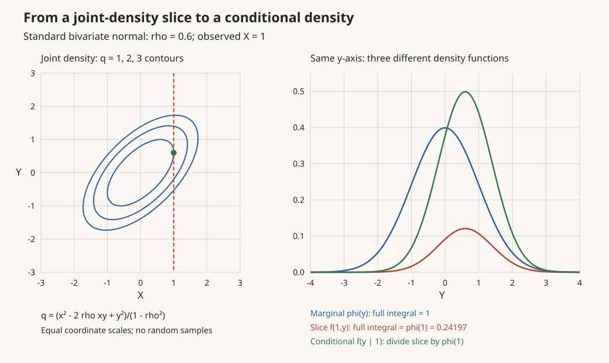

概率 III · 多维随机变量
现实问题几乎总是多变量的（身高与体重、收益与风险、图像的百万像素）。本页建立联合分布的语言，重点是三件事：边缘化（积掉不关心的）、条件化（固定已知的）、独立性判据——这三个动作正是概率图模型与贝叶斯推断的全部基本功。
1. 联合分布、边缘与条件
联合分布函数 \(F(x, y) = P(X \leq x, Y \leq y)\)。连续型有联合密度：\(F(x,y) = \int_{-\infty}^x\int_{-\infty}^y f(u,v)\,du\,dv\)，\(P((X,Y) \in D) = \iint_D f\)（二重积分上岗，数分 VI）。
边缘分布（"积掉不关心的变量"）：
⚠️ 联合定边缘，边缘定不了联合（不同的联合可以有相同的边缘——相关结构丢了）。
条件密度（"固定已知的变量再归一化"）：
后一形式是联合分布的链式分解——先采样 \(X\) 再按条件采样 \(Y\)。🔗 一切生成式建模的形式骨架（ai 课 03/07 讲；扩散模型的 \(q(x_{1:T}\mid x_0) = \prod q(x_t \mid x_{t-1})\) 也是它）。
2. 独立性
\(X, Y\) 独立 \(\iff F(x,y) = F_X(x)F_Y(y) \iff f(x,y) = f_X(x)f_Y(y)\)（几乎处处）。
实用判据：密度可分离变量 \(f(x,y) = g(x)h(y)\) 且支撑集是矩形（长方形区域）⇒ 独立。⚠️ 支撑集不是矩形（如单位圆盘上的均匀分布）时哪怕形式可分也不独立——\(X\) 的取值限制了 \(Y\) 的范围。
独立的继承性：\(X \perp Y \Rightarrow g(X) \perp h(Y)\)。
3. 多维随机变量的函数
和的分布（卷积公式） \(Z = X + Y\)，\(X \perp Y\)：
（不独立时把被积函数换成联合密度 \(f(x, z-x)\)。）三大可加族（独立同族相加不出族，参数相加——考试与建模都高频）：
| 族 | 结论 |
|---|---|
| 正态 | \(N(\mu_1, \sigma_1^2) + N(\mu_2, \sigma_2^2) = N(\mu_1{+}\mu_2,\ \sigma_1^2{+}\sigma_2^2)\) |
| 泊松 | \(P(\lambda_1) + P(\lambda_2) = P(\lambda_1 + \lambda_2)\) |
| 二项/Gamma/χ² | 同理参数相加（χ² 可加性是统计页抽样定理的引擎） |
最值分布（独立时）：
（记忆：最大值小于 z = 全都小于 z；最小值的对偶。名例：独立指数的 min 仍是指数，参数相加——"串联系统寿命"。）
商与积：分布函数法通吃；或二维变量替换公式（Jacobi 行列式版，数分 VI 换元的概率应用）。
4. 二维正态（多维正态的门面）

密度由五参数 \((\mu_1, \mu_2, \sigma_1^2, \sigma_2^2, \rho)\) 决定（指数上是二次型——高代 VI 正定矩阵在此现身：一般 \(n\) 维正态 \(N(\boldsymbol\mu, \Sigma)\) 的密度 \(\propto \exp\big({-\frac12}(x-\boldsymbol\mu)^\top\Sigma^{-1}(x-\boldsymbol\mu)\big)\)，\(\Sigma\) 为协方差矩阵）。
四条性质（重要级别拉满）：
- 边缘仍正态：\(X \sim N(\mu_1, \sigma_1^2)\)；
- 条件仍正态，且条件期望是线性的：\(E[Y \mid X = x] = \mu_2 + \rho\frac{\sigma_2}{\sigma_1}(x - \mu_1)\)（线性回归在正态世界是精确解而非近似——统计页回归的源头；条件方差 \(\sigma_2^2(1-\rho^2)\) 与 \(x\) 无关）；
- 对二维正态：不相关 \(\iff\) 独立（一般分布只有 ⇐！这是正态的特权，考试第一陷阱）；
- 线性组合仍正态（正态族对线性运算封闭——这是它成为"计算最友好分布"的原因，🔗 Kalman 滤波、高斯过程、扩散模型全靠这条性质做闭式推导，comfy 课 02 讲的闭式跳跃公式即"性质 4 + 可加性"）。
5. 典型例题
例 1（边缘与条件全流程） \(f(x,y) = 8xy,\ 0 < x < y < 1\)（注意三角形支撑集）。 解：\(f_X(x) = \int_x^1 8xy\,dy = 4x(1 - x^2)\)；\(f_{Y\mid X}(y\mid x) = \frac{8xy}{4x(1-x^2)} = \frac{2y}{1-x^2}\ (x < y < 1)\)。独立吗？形式 \(8xy\) 可分离，但支撑集非矩形——不独立（也可验证 \(f \neq f_X f_Y\)）。
例 2（卷积） \(X, Y \overset{iid}{\sim} U(0,1)\)，求 \(Z = X + Y\) 的密度。 解：\(f_Z(z) = \int f_X(x)f_Y(z - x)dx\)，被积为 1 的区域是 \(0<x<1\) 且 \(0<z-x<1\)：\(z \in (0,1]\) 时长度 \(z\)；\(z \in (1,2)\) 时长度 \(2 - z\)。得三角分布 \(f_Z(z) = z \wedge (2-z)\)。（两个均匀相加就开始"中间高两头低"——CLT 的最小演示，概率 V 呼应。）
例 3（min 指数） 两元件寿命独立 \(\mathrm{Exp}(\lambda_1), \mathrm{Exp}(\lambda_2)\)，串联系统寿命 \(T = \min\)：\(P(T > t) = e^{-\lambda_1 t}e^{-\lambda_2 t}\) ⇒ \(T \sim \mathrm{Exp}(\lambda_1 + \lambda_2)\)。\(\blacksquare\)
下一页：把分布压缩成几个关键数字——期望、方差、协方差与条件期望，"最佳预测 = 条件期望"在此证明。